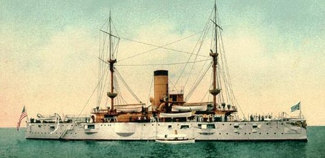

Saturday, March the 18th, 2006
back to: title, date or indexes

The picture above is of a ship, and thus gives a perfect illustration of the quality of being shipshape. If an object's form is roughly akin to the ship shown, we can say with some confidence that it is shipshape. Shipshape ought not be confused with shapeshift. To shapeshift, the verb, means to engage in shapeshifting, a practice of which various phantoms and ghouls are fond, the better to terrify us with intimations of the uncanny. Ah, I hear you say, but is that not precisely what might happen on a ghost ship, where one may encounter shipshape and shapeshift in the same context? I can only answer in the affirmative.
Ghost ships are a particularly chilling subcategory of ghoulish terror, but what are they exactly? Some contend that a ghost ship need have no phantoms nor shapeshifters aboard, but earns the description merely by being abandoned, emptied in a mysterious fashion of all life, save perhaps for a few rats scurrying in the cargo holds. The classic example is the Marie Celeste, which owes its fame to Arthur Conan Doyle's story J. Habakuk Jephson's Statement (1884), based on the case of the Mary Celeste, which had been found, intact but deserted, twelve years earlier.
Then there are true ghost ships, ones crewed by phantoms and ghouls, often piratical in nature, and usually seen at night, or in gales. The archetype here is The Flying Dutchman, not to be confused with Die Fledermaus, or flying mouse, which is a literal translation of the German for bat, and the name of Strauss's comic operetta of 1874, which has nothing to do with aerial Netherlanders, as far as I recall.Bats, poor innocent creatures that they are, have often been considered spooky and terrifying by people who ought to know better. Hanging upside down in a dark cave is not in itself evidence of ghoulishness, particularly if you are a bat.
I appear to have become diverted from the subject of shapeshifters aboard shipshape ships, and I apologise. Introducing bats into the equation—as they say in management gobbledegook seminars, using the phrase irksomely when there is not a single equation in sight—is only going to make matters more complex than they already are. In any case, if we begin to talk of bats, it will not be long before we need to differentiate bat, the flying mammal fond of hanging upside down in a dark cave, from bat, the tool with which a ball is propelled and controlled in any number of sports and games, and we will soon get on to racquets and rackets. As Lord Denning said in another context, “this is such an appalling vista that every sensible person in the land would say that it cannot be right that these actions should go any further”. For “actions” read “blatherings”.
If a ghost ship can be either one with a ghost crew, or one uncannily deserted, there is only one type of ship that can be described as a ship of fools, and that is a ship on which both passengers and crew are, to be blunt, fools. Hieronymus Bosch painted a ship of fools, and Sebastian Brant wrote a satire of that title in 1494. It is a medieval allegory that has had surprising resonance.
Typically audacious, the poet Dennis Beerpint has crammed all these legends together in his new verse drama The Abandoned Ship Of Fools And Ghouls. In a key scene, the derelict ship, no longer entirely shipshape, is discovered in a bat-riddled cave. Phantoms haunt the decks of the barquentine, while deeper inside the cave, the unnamed narrator discovers fools capering about and making a racket, playing a ball game with racquets. In a twist that will delight readers given to plot-twists, the narrator himself then shifts shape. Here are the closing lines:
So we leave this ship, so highly vaunted / By ghouls and phantoms now so haunted / We press on through the bat-dark cave / And pray to God our souls to save / We come to where the fools do caper / And I shift shape—I dissolve in vapour.
Most critics have dismissed Beerpint's latest work as pap, and one can hardly blame them.
Hooting Yard on the Air, March the 22nd, 2006 : “Squirrels : Emissaries From the Beyond?” (starts around 25:59)
{kind=link}